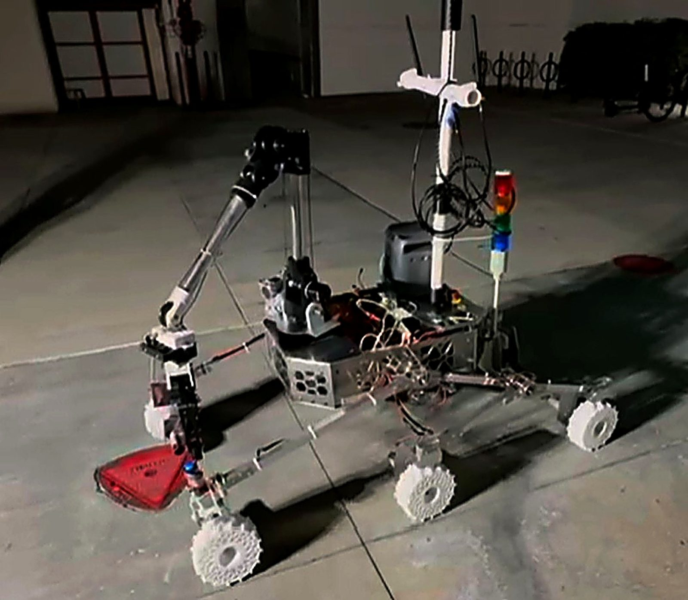
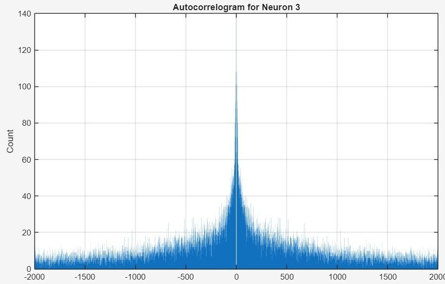
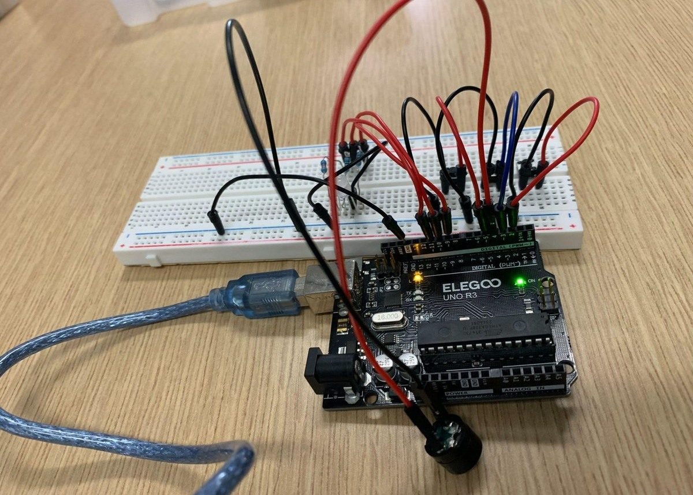
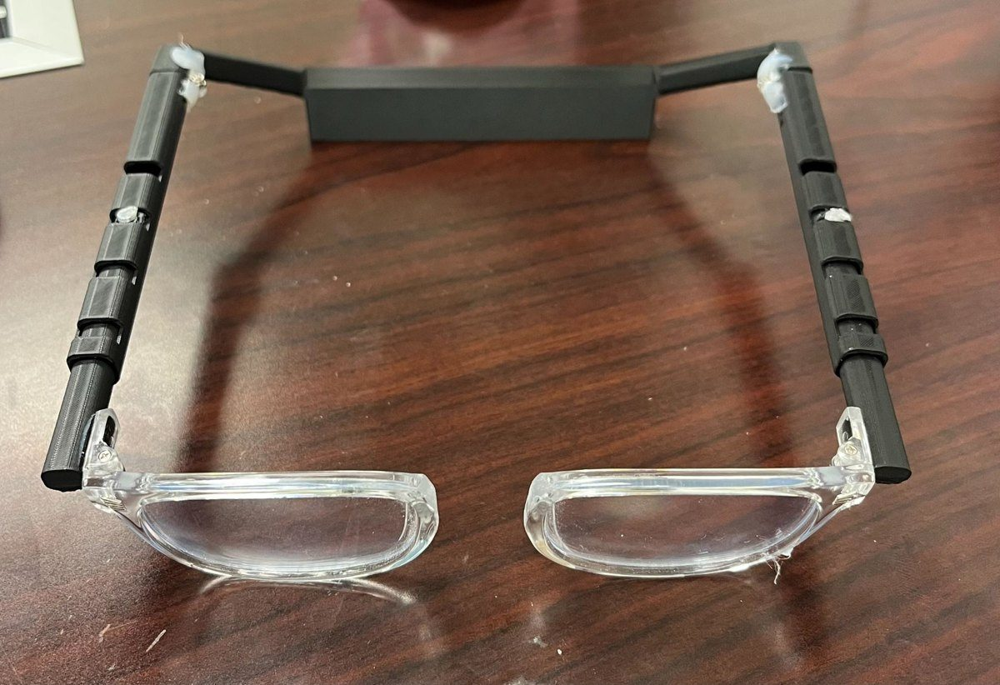
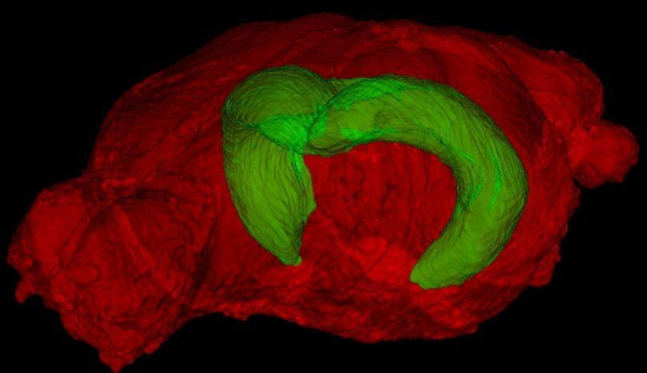

Projects

Mars Rover — University Rover Challenge
Assistant Project Manager on an 80+ engineer team building an autonomous Mars-analog rover. Developed the biosignature assay chemistry.

Autocorrelogram Spike-Train Tool
Interactive MATLAB tool analyzing neuronal spike trains from 129 neurons — ACG computation, neuron classification, and firing statistics.

Morse Code Learning Device
Arduino/C++ device that teaches and translates Morse code both ways. Owned the button-timing and input-sensitivity logic.

Bridgeless Eyeglasses — Project MacGyver
A bridgeless eyewear system that removes reliance on the nose. Team project covering CAD, materials selection, FEA validation, and a 3D-printed prototype.

Degu Brain Atlas — Xu Lab
First-author NIH-funded brain-atlas research (MRI segmentation, 222 regions) plus hardware design and fabrication for the lab.

Gait Rehabilitation Research
Human-subjects gait research — Vicon 3D motion capture, spinal cord stimulation trials, and MATLAB analysis of proprioception.
About
I'm a Biomedical Engineering student at UC Irvine drawn to work where hardware meets people — testing and validating real systems, building instrumentation, and translating messy field or lab data into decisions.
My work spans a clinical AR startup, two university research labs, and an 80+ person rover team. The through-line is rigor: defining what "working" means, measuring against it, and communicating what the data says.
I'm currently looking for R&D and clinical/applications engineering internships where I can contribute to test & validation, instrumentation, and human-facing engineering.